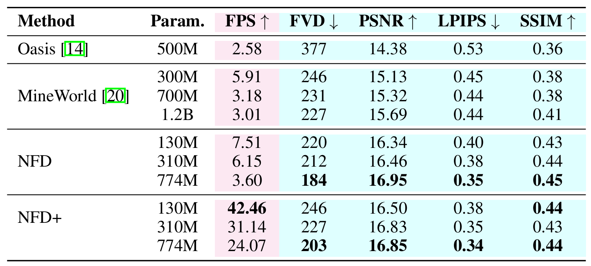

TL;DR: we present Next-Frame Diffusion (NFD), an autoregressive diffusion transformer that incorporates block-wise causal attention, enabling efficient inference via few-step sampling and parallel token generation.
Autoregressive video models offer distinct advantages over bidirectional diffusion models in creating interactive video content and supporting streaming applications with arbitrary duration. In this work, we present Next-Frame Diffusion (NFD), an autoregressive diffusion transformer that incorporates block-wise causal attention, enabling iterative sampling and efficient inference via parallel token generation within each frame. Nonetheless, achieving real-time video generation remains a significant challenge for such models, primarily due to the high computational cost associated with diffusion sampling and the hardware inefficiencies inherent to autoregressive generation.
To address this, we introduce two innovations: (1) We extend consistency distillation to the video domain and adapt it specifically for video models, enabling efficient inference with few sampling steps; (2) To fully leverage parallel computation, motivated by the observation that adjacent frames often share the identical action input, we propose speculative sampling. In this approach, the model generates next few frames using current action input, and discard speculatively generated frames if the input action differs. Experiments on a large-scale action-conditioned video generation benchmark demonstrate that NFD beats autoregressive baselines in terms of both visual quality and sampling efficiency. We, for the first time, achieves autoregressive video generation at over 30 Frames Per Second (FPS) on an A100 GPU using a 310M model.
The architecture of NFD contains a tokenizer that transforms raw visual signals to latent representations, and a Diffusion Transformer (DiT) that generates these latents.
We propose a Block-wise Causal Attention mechanism that combines bidirectional attention within each frame and causal dependencies across frames to model spatio-temporal dependencies efficiently. In contrast to the computationally intensive 3D full attention, our approach reduces the overall cost by 50%, enabling hardware-efficient and streaming prediction of all tokens in the next frame in parallel.
Given a video frame xi , we assign an independent timestep t and generate a noised version via linear interpolation:
Training minimizes the following Flow Matching loss:
For sampling, we adopt DPM-Solver++, where we recover the denoised frame with:
We introduce a set of methodological advancements aimed at improving the sampling efficiency of NFD, while preserving high visual fidelity in the generated video content.
We present a comparative analysis of our proposed method against state-of-the-art baselines in the following table, highlighting both sampling efficiency and visual quality of the generated videos.
Videos generated by NFD+ and MineWorld respectively, which illustrates a door-opening sequence. NFD+ accurately captures the door's geometry, maintaining its shape and structural integrity. In contrast, MineWorld introduces an artificial line between the two doors and fails to retain detail in the right portion of the door.
Videos generated by NFD+ and MineWorld respectively, which illustrates the superior temporal consistency achieved by NFD+. Despite a significant camera movement, NFD+ preserves a stable and coherent ground, whereas MineWorld introduces visible artifacts and distortions.